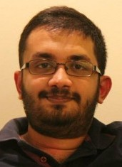

Keheliya Gallaba, Ph.D.
Software Engineering Researcher
Waterloo Centre for Software Excellence, Huawei CanadaKingston, ON, Canada
keheliya.gallaba@mail.mcgill.ca |
@keheliya |
@keheliya |
keheliya |
DBLP |
Google Scholar
I completed my Ph.D. in Software Engineering at McGill University advised by Dr. Shane McIntosh. In May 2016, I received my MASc in Electrical and Computer Engineering, at the University of British Columbia. At UBC, I was advised by Dr. Ali Mesbah and Dr. Ivan Beschastnikh. My research is in mining large-scale data sources in software engineering (e.g., GitHub, StackOverflow, and TravisCI) to uncover patterns and to provide insights for developers and tool builders. I'm also interested in programming languages, CI/CD, and empirical software engineering.
I have worked as a Software Engineer at WSO2, Fortinet, and Wise Systems. I have conducted research at Microsoft Research Lab in Cambridge and YourBase to build developer tools. In my free time, I enjoy reading and contributing to open source projects. This is a timeline of important events in my life.
Publications
-
Towards Reliable Generation of Executable Workflows by Foundation Models
[ link |
pdf ]
Sogol Masoumzadeh, K. Gallaba, Dayi Lin, and Ahmed E. Hassan
TOSEM Journal In ACM Transactions on Software Engineering and Methodology (TOSEM), Just Published, April 2026 -
Building an Open AIBOM Standard in the Wild
[ link |
pdf ]
Gopi Krishnan Rajbahadur, K. Gallaba, Elyas Rashno, Arthit Suriyawongkul, Karen Bennet, Kate Stewart, and Ahmed E. Hassan
ICSE'26 SEIP In Proceedings of the International Conference on Software Engineering: Software Engineering in Practice (ICSE-SEIP), pp. 842-853, April 2026 -
Characterizing Multi-Hunk Patches: Divergence, Proximity, and LLM Repair Challenges
[ link |
pdf ]
Noor Nashid, Daniel Ding, K. Gallaba, Ahmed E. Hassan, and Ali Mesbah
ASE'25 Full ACM SIGSOFT Distinguished Paper Award In Proceedings of the International Conference on Automated Software Engineering (ASE), Nov 2025, pp. 1629-1641 -
The Hitchhikers Guide to Production-ready Trustworthy Foundation Model powered Software (FMware)
[ link |
pdf ]
Kirill Vasilevski, Benjamin Rombaut, Gopi Krishnan Rajbahadur, Gustavo Ansaldi Oliva, K. Gallaba, Filipe Roseiro Cogo, Dayi Lin, Haoxiang Zhang, Boyuan Chen, Kishanthan Thangarajah, Ahmed E. Hassan, and Zhen Ming (Jack) Jiang
KDD'25 Full In Proceedings of the ACM SIGKDD Conference on Knowledge Discovery and Data Mining (KDD), pp. 6162-6172, July 2025 -
Developer-Applied Accelerations in Continuous Integration: A Detection Approach and Catalog of Patterns
[ link |
pdf ]
Mingyang Yin, Yutaro Kashiwa, K. Gallaba, Mahmoud Alfadel, Yasutaka Kamei, and Shane McIntosh
ASE'24 Full In Proceedings of the International Conference on Automated Software Engineering (ASE), pp. 1655-1666, 2024 -
Rethinking Software Engineering in the Era of Foundation Models
[ link |
pdf ]
Ahmed E. Hassan, Dayi Lin, Gopi Krishnan Rajbahadur, K. Gallaba, Filipe Roseiro Cogo, Boyuan Chen, Haoxiang Zhang, Kishanthan Thangarajah, Gustavo Ansaldi Oliva, Jiahuei (Justina) Lin, Wali Mohammad Abdullah, and Zhen Ming (Jack) Jiang
FSE'24 Industry In Companion Proceedings of the International Conference on the Foundations of Software Engineering (FSE), pp. 294-305, 2024 -
Lessons from Eight Years of Operational Data from a Continuous Integration Service: An Exploratory Case Study of CircleCI
[ link |
pdf |
video ]
K. Gallaba, Maxime Lamothe, and Shane McIntosh
ICSE'22 Full Nominated for ACM SIGSOFT Distinguished Paper Award In Proceedings of the International Conference on Software Engineering (ICSE), pp. 1330-1342, 2022 -
Accelerating Continuous Integration by Caching Environments and Inferring Dependencies
[ link |
pdf |
video ]
K. Gallaba, Yves Junqueira, John Ewart, and Shane McIntosh
TSE Journal In IEEE Transactions on Software Engineering (TSE), 48(6):2040-2052, 2020 -
Improving the Robustness and Efficiency of Continuous Integration and Deployment
[ link |
pdf ]
K. Gallaba and Shane McIntosh
ICSME'19 Short In Proceedings of the International Conference on Software Maintenance and Evolution (ICSME), pp. 619-623, 2019 -
Can duplicate questions on stack overflow benefit the software development community?
[ link |
pdf ]
Durham Abric, Oliver E. Clark, Matthew Caminiti, K. Gallaba, and Shane McIntosh
MSR'19 Short In Proceedings of the 16th International Conference on Mining Software Repositories (MSR), Mining challenge, pp. 230-234, 2019 -
Noise and Heterogeneity in Historical Build Data: An Empirical Study of Travis CI
[ link |
pdf ]
K. Gallaba, Christian Macho, Martin Pinzger, and Shane McIntosh
ASE'18 Full In Proceedings of the International Conference on Automated Software Engineering (ASE), pp. 87-97, 2018 - Use
and Misuse of Continuous Integration Features: An Empirical Study of Projects that (mis)use
Travis CI
[ link |
pdf ]
K. Gallaba and Shane McIntosh
TSE Journal In IEEE Transactions on Software Engineering (TSE), 46(1):33-50, 2018 -
Revisiting
"Programmers' Build Errors" in the Visual Studio Context
[ link |
pdf ]
Noam Rabbani, Michael S. Harvey, Sadnan Saquif, K. Gallaba, and Shane McIntosh
MSR'18 Short In Proceedings of the 15th International Conference on Mining Software Repositories (MSR), Mining challenge, pp. 98-101, 2018 -
Do
Software Engineers Use Autocompletion Features Differently Than Other Developers?
[ link |
pdf ]
Rahul Amlekar, Andrés Felipe Rincón Gamboa, K. Gallaba, and Shane McIntosh
MSR'18 Short In Proceedings of the 15th International Conference on Mining Software Repositories (MSR), Mining challenge, pp. 86-89, 2018 - An
Empirical Study of the Personnel Overhead of Continuous Integration
[ link |
pdf ]
Marco Manglaviti, Eduardo Coronado-Montoya, K. Gallaba, and Shane McIntosh
MSR'17 Short In Proceedings of the 14th International Conference on Mining Software Repositories (MSR), Mining challenge, pp. 471-474, 2017 - The Impact
of the Adoption of Continuous Integration on Developer Attraction and Retention
[ link |
pdf ]
Yusaira Khan, Yash Gupta, K. Gallaba, and Shane McIntosh
MSR'17 Short In Proceedings of the 14th International Conference on Mining Software Repositories (MSR), Mining challenge, pp. 491-494, 2017 - Refactoring
Asynchrony in JavaScript
[ link |
pdf ]
K. Gallaba, Quinn Hanam, Ali Mesbah, and Ivan Beschastnikh
ICSME'17 Full In Proceedings of the International Conference on Software Maintenance and Evolution (ICSME), 353-363, 2017 - Don't Call Us, We'll Call
You: Characterizing Callbacks in JavaScript
[ link |
pdf ]
K. Gallaba, Ali Mesbah, and Ivan Beschastnikh
ESEM'15 Full Best Paper Award In Proceedings of the International Symposium on Empirical Software Engineering and Measurement (ESEM), 247-256, 2015 - Levi - A Workflow Engine Using
BPMN 2.0
K. Gallaba, Umashanthi Pavalanathan, Ishan Jayawardena, Eranda Sooriyabandara, and Vishaka Nanayakkara
CeBPM'12 Workshop Workshop on Cloud-enabled Business Process Management (CeBPM 2012), Nov 28-30, 2012, Paphos, Cyprus; published in: Haller, A., Huang, G., Huang, Z., Paik, H.Y., Sheng, Q.Z. (Eds.): Web Information Systems Engineering - WISE 2011 and 2012 Workshops. Lecture Notes in Computer Science (LNCS) 7652, Springer Verlag, Berlin/Heidelberg 2013, pp. 92-104
Patents
See also: Google Patents
-
Methods and Systems for Augmenting Synthetic Data Labels with Human-Generated Data Labels
[ link ]
Gopi Krishnan Rajbahadur, Dayi Lin, K. Gallaba, Filipe Roseiro Cogo, and Ahmed E. Hassan
US-2026105313-A1 US Patent Application Filed Oct 2024, Published April 2026 -
Data Generation Methods and Apparatuses, and Related Products
[ link ]
K. Gallaba, Ali Arabat, Dayi Lin, and Ahmed E. Hassan
WO-2026076802-A1 International Patent Application (PCT) Assigned to Huawei Technologies Co., Ltd., Filed Nov 2024, Published April 2026 -
Hierarchical Dynamic Planning of Foundation Model Agents
[ link ]
K. Gallaba, Filipe Roseiro Cogo, Dayi Lin, Gopi Krishnan Rajbahadur, and Ahmed E. Hassan
WO-2026066496-A1 International Patent Application (PCT) Assigned to Huawei Technologies Co., Ltd., Filed July 2025, Published April 2026 -
Machine Learning Asset Management
[ link ]
Filipe Roseiro Cogo, Dayi Lin, Jia-Huei Lin, K. Gallaba, Gopi Krishnan Rajbahadur, and Ahmed E. Hassan
WO-2026016694-A1 International Patent Application (PCT) Assigned to Huawei Technologies Co., Ltd., Filed June 2025, Published Jan 2026
Service
- ICSE'27 International Conference on Software Engineering - PC Member (Research Track)
- ICSE'26 ICSE'25 ICSE'24 International Conference on Software Engineering - PC Member (Software Engineering in Practice Track)
- AGENT'26 International Workshop on Agentic Engineering - PC Member
- MSR'25 International Conference on Mining Software Repositories - PC Member (Data and Tool Showcase Track and Industry Track)
- ICSME'24 International Conference on Software Maintenance and Evolution - PC Member (Industry Track)
- AIware'24 ACM International Conference on AI-powered Software - Proceedings Chair
- SANER'24 International Conference on Software Analysis, Evolution and Reengineering - PC Member (Research Track)
- FORGE'24 International Conference on AI Foundation Models and Software Engineering - PC Member
- MSR'23 International Conference on Mining Software Repositories - PC Member (Research Track Junior PC and Industry Track PC)
- IEEE Software IEEE Software - Reviewer
- TOSEM ACM Transactions on Software Engineering and Methodology - Reviewer
- TSE IEEE Transactions on Software Engineering - Reviewer
- EMSE Empirical Software Engineering Journal - Reviewer
- JSS Journal of Systems and Software - Reviewer
- IST Journal of Information and Software Technology - Reviewer
- SCAM'21 International Working Conference on Source Code Analysis and Manipulation - Social Media Co-Chair
- ICPC'20 ICPC'19 International Conference on Program Comprehension - PC Member (Tools Track)
- SANER'19 International Conference on Software Analysis, Evolution, and Reengineering - Co-Reviewer
- MSR'18 International Conference on Mining Software Repositories - Co-Reviewer
- OOPSLA'17 Object-oriented Programming, Systems, Languages, and Applications - Artifact Evaluation Committee Member
- ICSME'17 International Conference on Software Maintenance and Evolution - Co-Reviewer